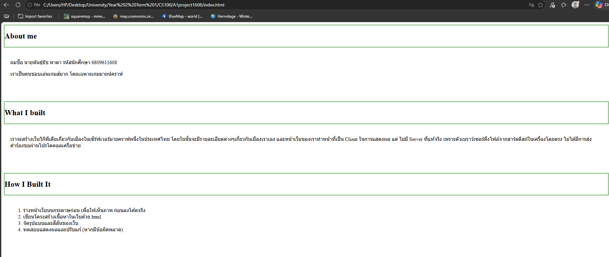
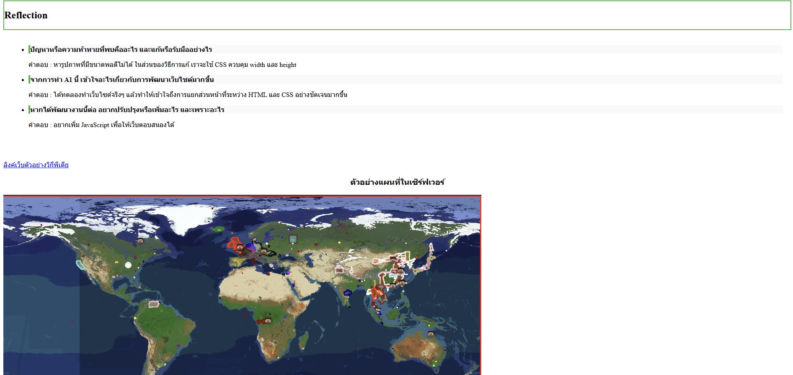
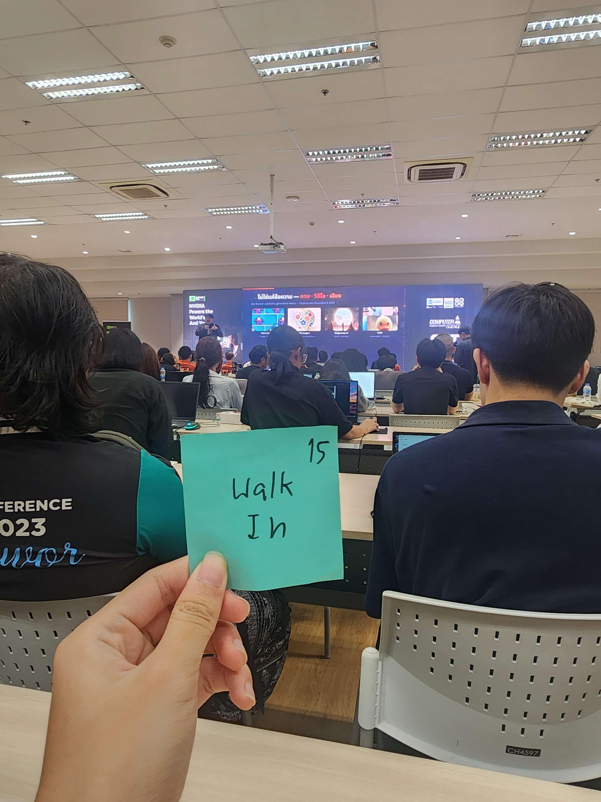
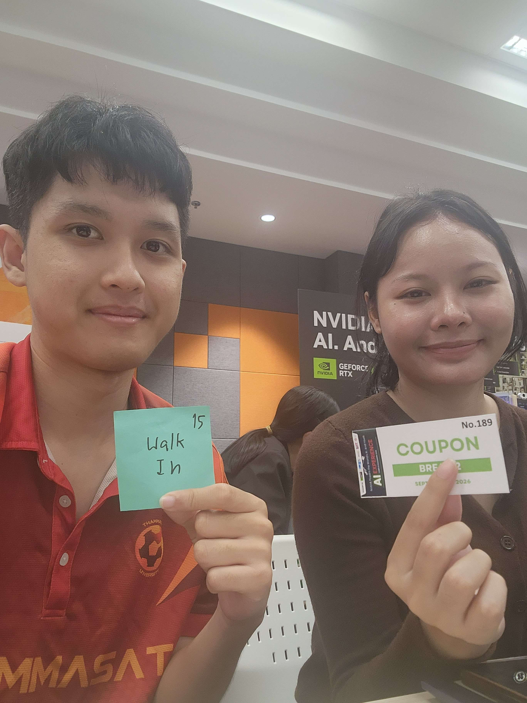

รหัสนักศึกษา: 6809611608 | คณะวิทยาศาสตร์และเทคโนโลยี
ผมเป็นเด็กที่ชอบเรียนคณิตศาสตร์ตั้งแต่เด็กๆ จนได้เข้ามาเรียนในสาขาคณิตศาสตร์ประยุกต์ และได้ลองลงเรียนวิชาเกี่ยวกับการเขียนโค้ด ทำให้ค้นพบความชอบในสายงานนี้จนตัดสินใจเลือกเรียนวิชาโทวิทยาการคอมพิวเตอร์ แม้เนื้อหาจะท้าทายและเรียนหนัก แต่ผมพร้อมจะตั้งใจพัฒนาทักษะการเขียนโปรแกรมอย่างเต็มที่ครับ


30 ส.ค. 2569
พัฒนาเว็บไซต์ Portfolio แบบหน้าเดียว (Single Page) ด้วย HTML และ CSS เพื่อฝึกฝนการจัดโครงสร้างเว็บเบื้องต้น
ตอนแรกเข้าใจเพียงแค่การใช้ HTML และยังไม่เข้าใจ CSS แต่จากการทำ Assignment นี้ ทำให้เห็นว่า CSS เป็นเครื่องมือสำคัญที่ช่วยจัดระเบียบและตกแต่งเว็บไซต์ให้สวยงามน่าใช้ยิ่งขึ้น ถึงแม้จะมีบางส่วนที่ต้องพึ่งพา AI ช่วยอธิบายโค้ดที่ไม่เข้าใจก็ตาม


4 กันยายน 2569
เข้าร่วมเวิร์กช็อปเกี่ยวกับวิธีการและระบบการทำงานของ AI พร้อมรับฟังการแบ่งปันประสบการณ์จากวิทยากรตั้งแต่ก้าวแรกจนถึงความสำเร็จ
เดิมทีตั้งใจเข้าร่วมเพื่อเก็บคะแนน แต่เมื่อได้สัมผัสจริงกลับได้รับความรู้ที่มีคุณค่ามากกว่าคะแนนที่ได้ ทั้งเทคนิคการใช้งาน AI ให้เกิดประสิทธิภาพสูงสุด ความเข้าใจทั้งด้านคุณและโทษ รวมถึงแนวทางการนำ AI ไปประยุกต์ใช้ในการทำงานจริง